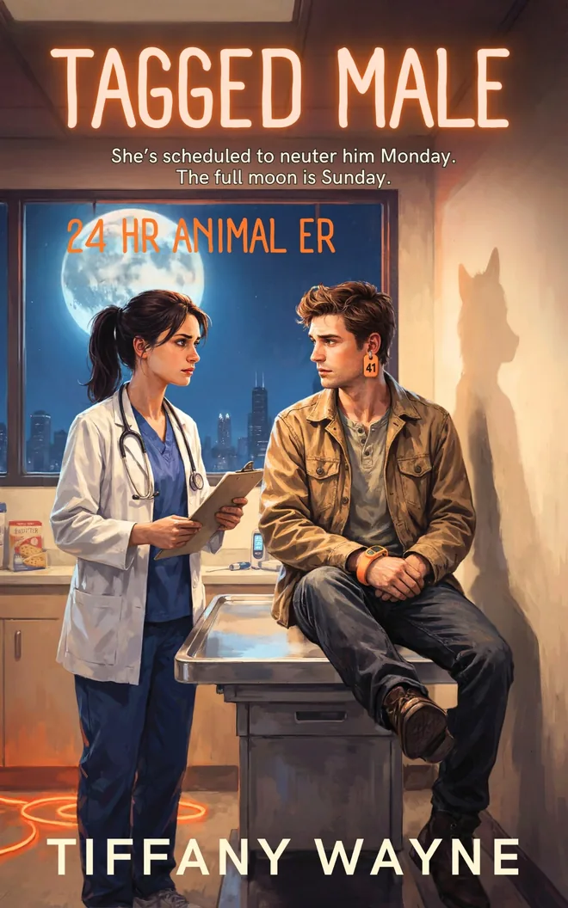

The standalone paranormal romcom series
After Dark
in Chicago
Chicago has always been a little strange after dark. Most people just never notice.
Behind the sleet, the late-night radio and the 24-hour diners, the city keeps its supernatural residents in plain sight. There’s a demon who answers the phones at a struggling AM station. A coyote who keeps landing on an overnight vet’s exam table. And a woman whose bad moods come with a snow forecast.
Each After Dark in Chicago book is a complete standalone paranormal romantic comedy. Each has a new couple and a guaranteed happily ever after, so you can start anywhere. You’ll find dry, dark humor, slow-burn chemistry, warm fade-to-black heat, and the kind of Chicago weirdness that only comes out at 2 a.m. Read them all, and you’ll catch the overlaps: WDRY 1490 is always on somewhere in the background.

After Dark in Chicago · Book 1
Dead AirTiffany Wayne
Book 1 · Available for preorder
Dead Air
Paranormal romcom with dark comedy
Every night at 2:14 a.m., halfway through an ad for a discount cremation service, she says the wrong words in the right order, and a demon appears in her booth.
Margo Dunleavy has hosted the graveyard shift at WDRY 1490 AM for eleven years. Nobody listens. The owner is selling the station for a parking lot. The only sponsor still paying is a discount crematorium, whose nephew just “classed up” the ad copy with a little Latin.
It isn’t Latin. It’s Akkadian.
Now a five-thousand-year-old demon of desire is standing at her console in a Prohibition-era coat, offering her one wish in exchange for her soul. Margo has no intention of wishing; wanting things out loud is how her mother lost everything. So she does the only reasonable thing.
She puts him on the air.
Dennis can hear what every caller truly wants, and he can’t lie about it. Marriages end live. Lives change. The ratings explode. But Margo’s own wants come through as pure static, and Hell gave him thirty nights. If she doesn’t wish, he loses his name, and everyone who ever knew him forgets he existed. Including her.
She keeps her soul only if she doesn’t wish. He survives only if she does. And somewhere between commercial breaks, he has started rooting against himself.
You’re on the air.

After Dark in Chicago · Book 2
Tagged MaleTiffany Wayne
Book 2 · Available for preorder
Tagged Male
She’s scheduled to neuter him Monday. The full moon is Sunday.
Dr. Jo Vandervelt has worked the overnight shift at a Chicago animal ER for nine years. She has pulled a wedding ring out of a ferret and talked a Great Dane through a swallowed smart watch. Nothing a stray drags in rattles her.
Then the same tagged coyote comes in for the third time. On Sunday night, there’s a naked man in Kennel 4 wearing his ear tag.
Heath Pruitt wears that tag on purpose. He’s his pack’s decoy, walking fake routes so the county’s coyote study never finds their dens. The same study funds Jo’s wildlife program. If she hides him, she risks the program she spent nine years building. If she doesn’t, his family gets found.
And coyotes mate for life. His instincts have already chosen: the woman with the scalpel.
Jo is very good at letting go.
Heath has been released three times. He keeps coming back.
A standalone paranormal romantic comedy with a fade-to-black love scene.
Planned · Outlined
Lake Effect
Every time she falls a little harder, Chicago gets another six inches of snow.
Greta Lund’s feelings make the weather. When she laughs, it’s seventy degrees in January. When she’s angry, it hails. Her last breakup shut down O’Hare for three days.
So Greta doesn’t do feelings. She does chamomile, night shifts dispatching the city’s snowplows, and a flat, pleasant “That’s fine.” One more storm that makes the news, and her coven will bind her magic for good, along with every feeling that powers it.
Then a snow squall drops out of a blue sky onto a live TV forecast. Weekend weatherman Noah Carver is one bad month from being replaced by an app, and he’s the only person in Chicago who has noticed the weather is following one woman.
He’s earnest. He’s relentless. Worst of all, he’s funny.
And for Greta, falling in love means snow.
In planning · Outline stage
Standing Appointment
Every fourth Tuesday after closing, Chicago’s undead come in for a touch-up.
A little wax, a fresh stitch, the right shade of foundation, and the city’s zombies stay presentable for another month. The funeral home’s back room runs like a beauty parlor, complete with gossip, standing bookings and a waiting list.
Then the old embalmer retires, and his grandson inherits the practice without inheriting the secret.
He’s a careful, kind, newly licensed funeral director who has never once had a client sit up and ask for a mirror. She’s the regular who has, and who has opinions about his technique. The zombies need him to stay. He needs to stop fainting. And zombie law is very clear: you never fall for your embalmer, because the man who keeps you together decides how long you last.
Which would be easier to follow if he weren’t so gentle with his hands.
Outlined · Drafting
Pulse Check
He can hear every heartbeat in the room. Hers is the only one he can’t read.
Rox Hayes runs Seven Minutes, a speed-dating night in the back room of a Chicago bar, and it’s dying. Nobody matches, everybody lies, and the bar’s new owner will turn her room into an axe-throwing “concept” unless she sells out a hundred seats by Thanksgiving weekend.
Then a pale, painfully polite man stays after closing to tell her who in the room is lying, who’s in love with the bartender, and who has never run a marathon. He’s right every time.
Martin Cooper is also three weeks into being a vampire. He faints at the sight of his own fangs, drinks his dinner through a straw, and is forbidden to work anywhere near a crowd. If the treaty office catches him, he loses his freedom for a year.
Rox hires him anyway.
There’s just one problem: his fangs can’t tell the difference between hunger and wanting her.
A standalone paranormal romantic comedy. Warm heat, with intimate scenes fading to black.

An After Dark bonus scene
Night 31Tiffany Wayne
After Dark · The newsletter
There’s room for you
on The Night Crew.
Join Tiffany Wayne’s After Dark newsletter for book news and your free bonus scene, Night 31.